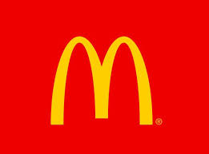
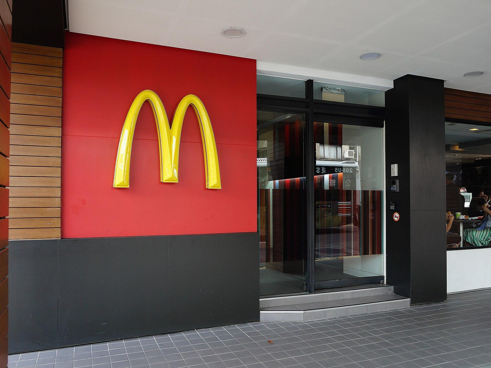
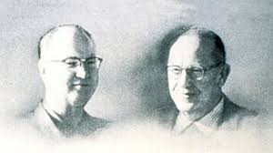

Nossa história começou em 1955, quando Ray Kroc fundou a corporação que transformaria o conceito de alimentação rápida em todo o mundo. Hoje, operamos a partir da nossa matriz global, o McDonald's Global Headquarters, localizado em Chicago, Illinois (EUA). Com décadas de tradição, consolidamos uma presença massiva que alcança mais de 100 países, levando o mesmo padrão de qualidade e o sabor icônico que você encontra em qualquer lugar do planeta.

Para fazer essa engrenagem gigante girar com precisão e carinho, contamos com uma força de trabalho impressionante de aproximadamente 200 mil funcionários diretos (chegando a milhões se considerarmos nossas franquias). Nossos diferenciais vão muito além do cardápio: investimos em processos rigorosos de segurança alimentar, sustentabilidade em nossa cadeia de suprimentos e, acima de tudo, na agilidade de um atendimento que entende a dinâmica do seu dia a dia, garantindo que sua refeição chegue sempre quente e deliciosa.
Estamos sempre de portas abertas para ouvir você e evoluir juntos. Caso tenha qualquer dúvida sobre nossos ingredientes, promoções ou queira saber mais sobre como trabalhamos, não hesite em entrar em contato conosco através dos nossos canais oficiais. Convidamos você a visitar nossas unidades e experimentar de perto o que nos torna a rede de restaurantes mais amada do mundo. Afinal, a gente ama muito tudo isso!
Tudo começou com os irmãos Richard e Maurice McDonald, que abriram uma lanchonete em San Bernardino, Califórnia, em 1940. Em 1948, eles revolucionaram o setor ao criarem o "Sistema de Serviço Speedee", que aplicava os princípios da linha de montagem de fábricas à cozinha. Eles focaram em um cardápio limitado de hambúrgueres, batatas fritas e bebidas, permitindo que os pedidos fossem entregues em segundos, com baixo custo e alta eficiência.

fundadores da empresaO grande ponto de virada ocorreu em 1954, quando Ray Kroc, um vendedor de máquinas de misturar milkshakes, visitou o restaurante e ficou impressionado com a operação. Kroc viu um potencial que os irmãos não viam: a possibilidade de expandir aquele modelo por todo o país. Ele se tornou o agente de franquias da marca e fundou a McDonald's System, Inc. em 1955, abrindo sua primeira unidade própria em Des Plaines, Illinois, que hoje é um marco histórico.
A relação entre Kroc e os irmãos McDonald, no entanto, foi marcada por tensões crescentes devido a visões conflitantes sobre a expansão e o controle da marca. Em 1961, Ray Kroc comprou a parte dos irmãos por $2,7 milhões de dólares, um valor astronômico para a época, mas que garantiu a ele o controle total do nome e dos métodos. O fim da parceria foi amargo; os irmãos perderam o direito de usar o próprio sobrenome no restaurante original, que foi renomeado para "The Big M" e, pouco depois, faliu devido à concorrência de uma nova unidade do McDonald's aberta por Kroc logo em frente.
Enquanto os irmãos McDonald terminaram suas carreiras com um legado técnico inegável, mas longe dos bilhões que a marca geraria, Ray Kroc faleceu em 1984 como um dos maiores magnatas do varejo da história. Sob sua liderança, a empresa deixou de ser uma lanchonete de beira de estrada para se tornar um império global de imóveis e alimentação. Hoje, o McDonald's é o símbolo máximo da globalização, unindo a eficiência operacional dos fundadores originais com a ambição comercial de Kroc.